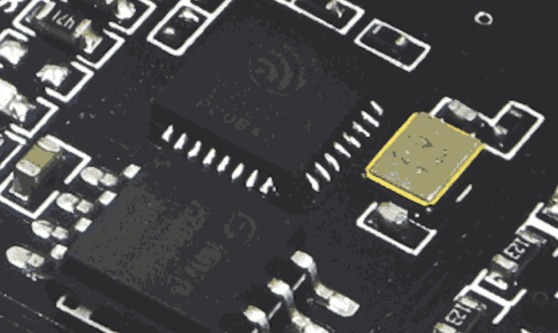

Setting Up The NodeMCU with the Arduino IDE
Prerequisite
First, you're going to need to acquire the Arduino IDE. In my experience, version >1.9.0 of the IDE works best. As of right now, this version is in Beta, and can be downloaded from: https://www.arduino.cc/en/Main/Software.

Setup
- Open the IDE and go to
File -> Preferences - Under
Additional Board Managers, enter the following:https://dl.espressif.com/dl/package_esp32_index.json, http://arduino.esp8266.com/stable/package_esp8266com_index.json - Press OK
- Go to
Tools -> Board -> Boards Managerand type inESP8266. A single board should appear. Install it. - Once it's finished, go to
Tools -> Boardand selectNodeMCU v1.0 (ESP12-E Module) - Now select the correct Port. This will be different on every machine.
Test Sketch
To test your setup, run this quick little sketch:
unsigned long lastTickMillis = 0; int tickState = 0; void setup() { Serial.begin(115200); } void loop() { unsigned long currentMillis = millis(); if(currentMillis - lastTickMillis >= 1000){ if(tickState == 0){ tickState = 1; Serial.print("TICK\n"); }else{ tickState = 0; Serial.print("TOCK\n"); } lastTickMillis = currentMillis; } }
Upload this sketch to the NodeMCU, then open up the Serial Monitor with Tools -> Serial Monitor. Once it finishes uploading, you should see the output of the program.
That's about it! That should get you started.